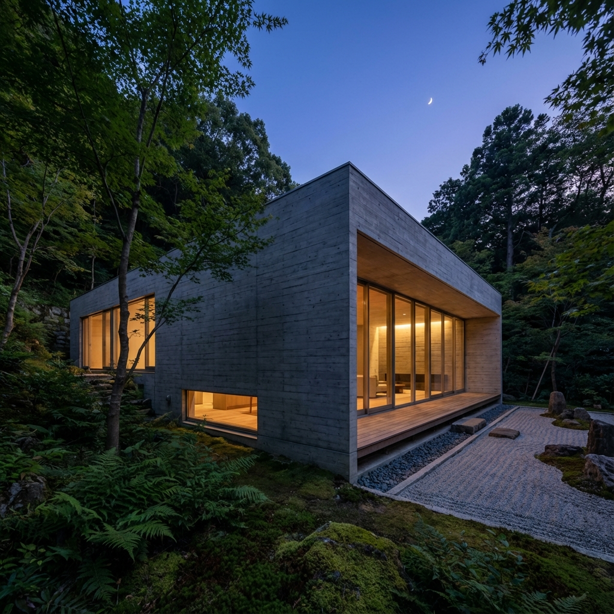

FIG.01 // LIGHT STUDY
LOC: 35.65°N, 139.70°E
LOC: 35.65°N, 139.70°E
MANEGATIVE SPACE
PHILOSOPHY
001
001
We design
not the walls,
but the silence between them.
壁ではなく、余白をデザインする。
光と影の彫刻としての建築。
Architecture as a sculpture of light and shadow.
Refining the void.
SELECTED WORKS
2023-2025
2023-2025
HOUSE K
#001
- LOC: KAMAKURA
- AREA: 145.2m²
- YEAR: 2024
VIEW PROJECT
CAFE O
#002
- LOC: OMOTESANDO
- TYPE: COMMERCIAL
--->
MUSEUM T
#003
- LOC: TOYAMA
- AREA: 2,400m²